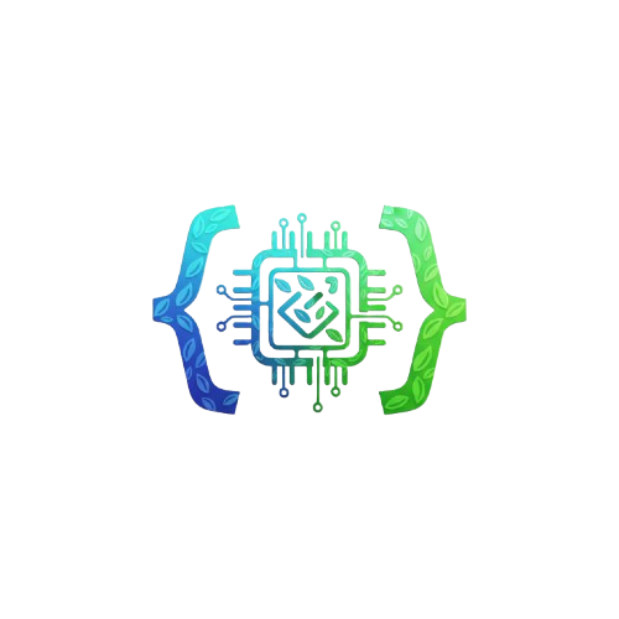

Développeur en devenir & Esprit Logique
Raphaël Fouque
Au-delà des lignes de code, je cherche l'impact.
Pour moi, l'informatique n'est pas une fin en soi, mais un outil puissant pour résoudre des
problèmes complexes et servir l'intérêt général. Étudiant en 2ème année de BUT Informatique, je
construis mon profil autour d'une conviction forte : un bon logiciel doit être aussi robuste
dans son architecture (backend) qu'intuitif pour son utilisateur
(frontend).
Mon parcours est atypique car il fusionne deux mondes souvent opposés : la rigueur mathématique, qui me permet de concevoir des systèmes logiques et sécurisés, et une sensibilité artistique, qui me pousse à soigner l'ergonomie de mes projets. Que ce soit en développant une plateforme de démocratie participative ou en sécurisant une infrastructure, je m'applique toujours à livrer un code propre, maintenable et utile.

Ce qui fait ma différence
Mon approche technique s'appuie sur un équilibre singulier entre logique pure, créativité et exigence de sécurité.
La Rigueur Mathématique
Issu d'un baccalauréat scientifique (Maths/NSI), j'aborde le développement comme une équation. J'aime structurer mon code, optimiser les algorithmes et m'assurer que l'architecture backend (Java/SQL) est solide avant même d'écrire la première ligne.
La Sensibilité Visuelle
Un code parfait ne sert à rien si l'interface est inutilisable. Ma pratique des Arts Plastiques m'a donné l'œil pour le détail et l'ergonomie. Je ne me contente pas de faire fonctionner les choses, je m'assure qu'elles soient agréables à utiliser.
L'Exigence de Sécurité
Mon immersion à la Police Judiciaire (Division Cyber) a changé ma vision du métier. J'ai compris qu'aujourd'hui, on ne peut plus développer sans penser "sécurité" et "confidentialité" dès la conception. C'est une rigueur que j'intègre désormais systématiquement.
Responsabilité & Leadership
Mes nombreuses expériences d'animateur en colonie m'ont forgé une maturité précoce. Être garant de la sécurité physique et morale d'un groupe demande une vigilance constante et une grande capacité d'adaptation. J'ai appris à gérer des conflits, à travailler en équipe sous pression et à prendre des initiatives : des qualités humaines indispensables à tout projet technique réussi.
Mon Parcours
BUT Informatique - Parcours "Réalisation d'Applications"
IUT Montpellier-Sète (2023 - Présent)
J'ai choisi l'IUT pour son approche concrète. J'y ai appris à travailler en équipe (méthode Agile/Scrum) sur des projets longs, comme le développement d'une application de démocratie participative. Le parcours RACDV me permet de me spécialiser dans le cycle de vie complet d'un logiciel.
Baccalauréat Général - Maths & NSI
Lycée Jules Guesde (Mention Bien)
C'est ici que ma curiosité s'est transformée en vocation. La spécialité NSI m'a donné les bases de l'algorithmique, tandis que les mathématiques ont structuré ma façon de raisonner face à un problème.
Où je vais
Objectif : Ingénieur Logiciel & Sécurité
Mon ambition est claire : poursuivre en École d'Ingénieur en 2026. Je souhaite atteindre un niveau d'expertise qui me permette de gérer des architectures complexes.
Initialement pur développeur, je pivote progressivement vers la Cybersécurité. Je suis convaincu que pour bien protéger un système, il faut d'abord savoir le construire parfaitement. C'est cette double compétence "Bâtisseur / Protecteur" que je suis en train de forger.